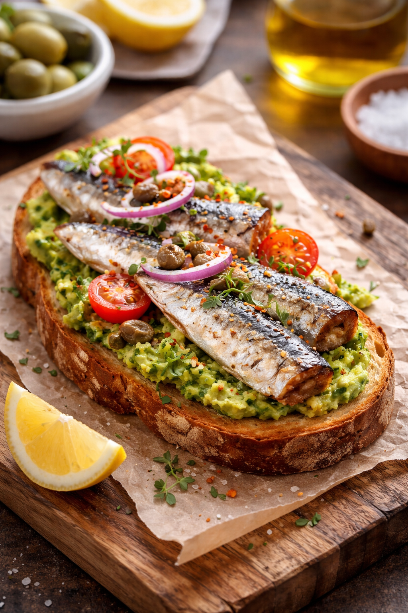
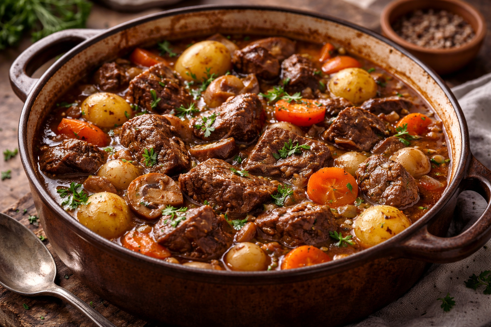
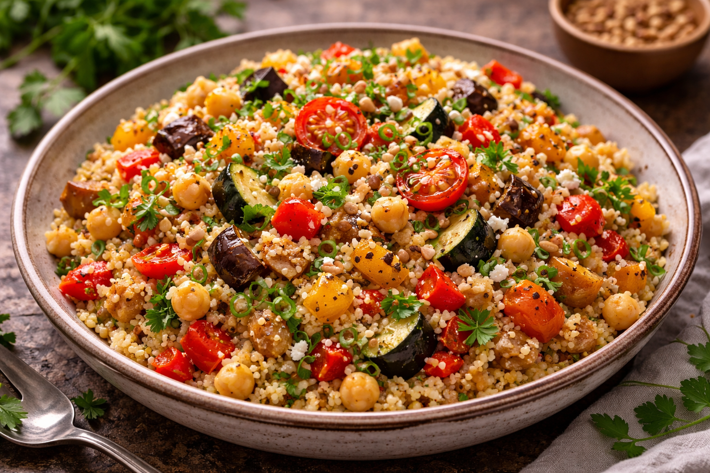

Gazpacho clasico
Sopa fria con tomate maduro, pepino y aceite de oliva virgen.
Ver detalle de esta recetaPortal Gastronomico
Sabores de Origen
Biblioteca culinaria
Filtra por categoria para encontrar propuestas adaptadas al tiempo del que dispones.
Mostrando 6 recetas.
Sopa fria con tomate maduro, pepino y aceite de oliva virgen.
Ver detalle de esta receta
Arroz blanco con pollo glaseado en salsa teriyaki casera.
Ver detalle de esta receta
Pan empapado en leche con huevo, frito y rebozado en canela y azucar.

Pan crujiente, sardina marinada y crema de pimiento asado.

Coccion lenta con verduras de temporada y vino tinto.

Saten rapido con especias suaves y hierbas frescas.